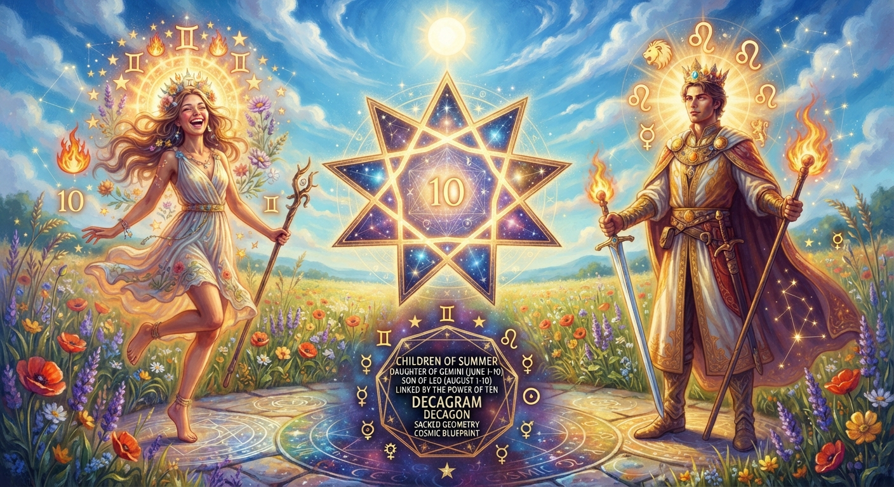

Children of Summer
Children of Summer is a lyrical meditation on astrological identity, elemental balance, and sacred connection. It speaks in the
voice of a daughter of early June—the second decan of Gemini—who carries a feminine, youthful fire beneath a blue-white
sky.
Across the poem, she finds her counterpart in a son of early August—the second decan of Leo—who burns with a
masculine, regal flame as the King of Swords. Together, their separate signs and seasons converge into a shared cosmic
geometry: the Decagram and the Decagon, anchored in the power of ten. Rooted in zodiacal imagery and the language of
sacred geometry, the piece explores how two distinct summer-born souls form one blueprint, one shape, one
universe-written bond.
🎵 "Endless Summer (Vlog Music)" - KonstantinPazuzuStudio (Pixabay Music)
